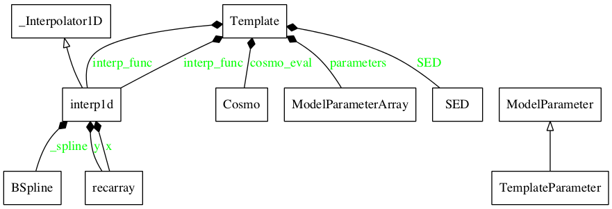

Module: model_template¶
Overview¶
This module provides an interface handle the template model
Classes relations¶

Classes and Inheritance Structure¶

Module API¶
Summary¶
Template(template_type[, z, nu_size]) |
Class to handle spectral templates |
TemplateParameter(template, **keywords) |
This class is a subclass of the ModelParameter class, extending the base class to Template parameters. |
Module API
-
class
BlazarSEDFit.template_model.Template(template_type, z=None, nu_size=100)[source]¶ Bases:
objectClass to handle spectral templates
-
class
BlazarSEDFit.template_model.TemplateParameter(template, **keywords)[source]¶ Bases:
BlazarSEDFit.model_parameters.ModelParameterThis class is a subclass of the
ModelParameterclass, extending the base class to Template parameters.